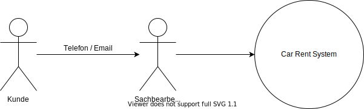
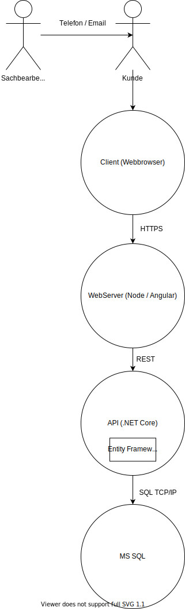
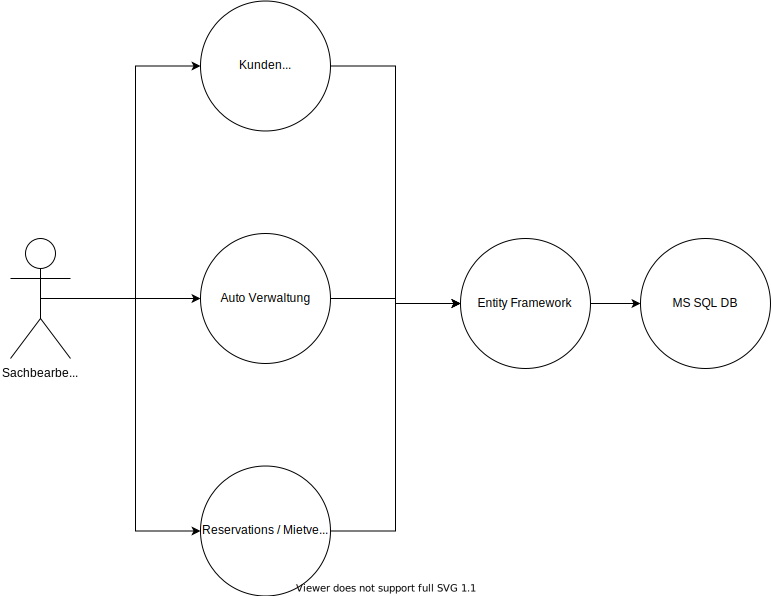
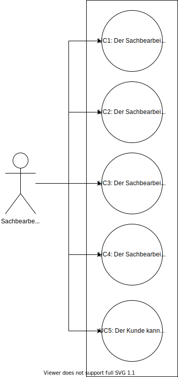
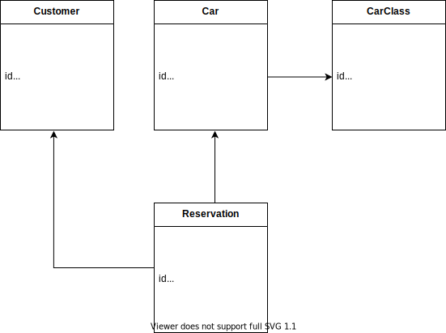
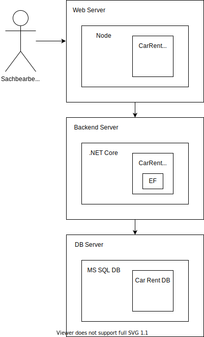

Vision
Context

Was soll gebaut werden?
- Eine Software, mit der ein Sachbearbeiter Kunden und Autos erfassen kann.
- Eine Software, mit der Kunden via Sachbearbeiter Autos für einen gewünschnten Zeitraum reservieren und mieten können.
Wer benutzt das System?
- Sachbearbeiter
- Kunden indirekt
Wie passt es in die bestehende IT-Landschaft?
- Es gibt noch keine bestehende IT-Landschaft.
Containers

Was sind die technologischen Entscheide?
- Client
- Angular
- Server
- ASP.NET Core
- Entity Framework
- Testing
- x-Unit
- FakeItEasy
- Database
- Microsoft SQL
- CI/CD
- GitHub
- Sonar
Wie kommunizieren die Container untereinander?
- Client / Server
- HTTP REST
- Server / Database
- Entity Framework (TCP/IP)
Components

Aus welchen Komponenten und Services besteht das System?
- Verwaltungen
- Kundenverwaltung
- Autoverwaltung (inkl. Autoklassen)
- Reservations- / Mietvertrags-Verwaltung
- Sämtliche Verwaltungen greifen via EF auf die DB.
Ist klar wie das System „high-level“ arbeiten soll?
- Beispiel Kunde erfassen:
- Der Sachbearbeiter kann im Webclient ein Kunde erfassen.
- Dazu muss er die entsprechenden Daten bei sich im Browser eingeben.
- Beim Klick auf Speichern wird ein HTTP POST Request mit den entsprechenden Daten im Payload auf die Backend ASP .NET API gemacht.
- Diese validiert die Daten.
- Falls ungültig gibt sie ein HTTP Status 400 zurück.
- Falls gültig erstellt sie im Entity Framework ein neues Objekt und speichert es in der Datenbank.
- Sobald das Objekt erfolgreich gespeichert wurde gibt die API einen HTTP Status 201 zurück.
- Die Webapplikation kann dann entsprechend mit einer Erfolgsmeldung darauf reagieren.
Use Cases im "Brief" Format

UC1 Der Sachbearbeiter kann Kunden verwalten (CRUD)
- Der Sachbearbeiter kann im Webclient Kunden:
- Erfassen
- Felder:
- Kundennummer
- Muss einzigartig sein.
- Vorname
- Name
- Strasse
- Nummer
- PLZ
- Ort
- Land
- Kundennummer
- Felder:
- Bearbeiten
- Löschen
- Kunden, die bereits eine Reservation, oder einen Mietvertrag besitzen können nicht gelöscht werden.
- Sondern diese werden nur als gelöscht markiert.
- Sobald ein Kunde als gelöscht markiert wurde, kann er keine neuen Reservationen mehr vornehmen.
- Kunden mit offenen Reservationen können nicht als gelöscht markiert werden.
- Suchen
- Kunden sollen über folgende Felder gesucht werden können:
- Vorname
- Nachname
- Kundennummer
- Kunden sollen über folgende Felder gesucht werden können:
- Erfassen
UC2 Der Sachbearbeiter kann Autoklassen verwalten (CRUD)
- Der Sachbearbeiter kann im Webclient Autoklassen:
- Erfassen
- Felder:
- Name
- Tagesgebühr
- Felder:
- Bearbeiten
- Löschen
- Klassen, die bereits mind. 1 Auto zugewiesen sind können nicht gelöscht werden.
- Suchen
- Klassen sollen über folgende Felder gesucht werden können:
- Name
- Klassen sollen über folgende Felder gesucht werden können:
- Erfassen
UC3 Der Sachbearbeiter kann Autos verwalten (CRUD)
- Der Sachbearbeiter kann im Webclient Autos:
- Erfassen
- Felder:
- Marke
- Typ
- Autonummer
- Autoklasse
- Felder:
- Bearbeiten
- Löschen
- Autos, die bereits mind. einem Mietvertrag zugewiesen sind, können nicht gelöscht werden.
- Sondern sie werden nur als gelöscht markiert.
- Als gelöscht markierte Autos können nicht erneut reserviert werden.
- Autos mit offenen Reservationen können nicht als gelöscht markiert werden.
- Suchen
- Autos sollen über folgende Felder gesucht werden können:
- Marke
- Autnummer
- Autos sollen über folgende Felder gesucht werden können:
- Erfassen
UC4 Der Sachbearbeiter kann Autos für einen Kunde reservieren
- Über die Auto-Suche (UC3) kann der Sachbearbeiter ein Auto auswählen.
- Nachdem er das Auto ausgewählt hat, kann er ein Start und ein Enddatum der Reservation angeben.
- Sobald er die Anzahl Tage ausgewählt hat, werden ihm die Gesamtkosten für die Reservation angezeigt.
- Beim Klick auf "Reservieren" wird eine neue Reservation angelegt:
- Felder
- Reservationsnummer
- Kunde
- Auto
- Startdatum
- Enddatum
- Felder
UC5 Der Kunde kann ein reserviertes Auto abholen
- Am Startdatum kommt der Kunde in die Garage und der Sachbearbeiter klickt bei der entsprechenden Reservation:
- Mietvertrag generieren
- Dieser Button wandelt die Reservation in einen Mietvertrag um.
- Das Reservationsmodel hat ein Flag "Mietvertrag".
- Dieses wird just in diesem Moment auf true gesetzt.
- Der Kunde unterzeichnet den Vertrag und kann das Auto mitnehmen.
Domain Model

Views
Deployment View

Implementation View
|
+---docs
| |
| \---images
|
\---source
|
+---src
| \---CarRentApi
| |
| +---CarManagement
| | +---Api
| | +---Application
| | +---Domain
| | \---Infrastructure
+---CustomerManagement
| | +---Api
| | +---Application
| | +---Domain
| | \---Infrastructure
+---ReservationsManagement
| | +---Api
| | +---Application
| | +---Domain
| | \---Infrastructure
\---tests
\---CarRentApi.Tests